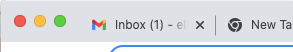
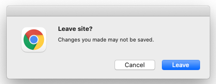
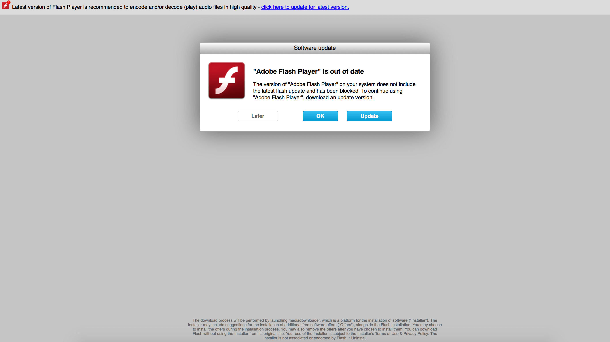

(1) New Message: How websites catch your attention with JavaScript
Jan 22, 2022 · 1965 words · 10 minutes read
There are many good things about JavaScript. There are also bad things about JavaScript.
There are many cases of well-intentioned features in JavaScript being used for unhelpful purposes. These features can help support rich web applications with impressive features and capabilities, but they can often be used antagonistically, in the sense that they aren’t helpful for the user (like intercepting your clipboard commands). I find these cases interesting, and I wanted to explore a few of these attention-grabbing examples.
Note: these were all tested on desktop in Chrome, Firefox, and Safari. If you’re on mobile or an unsupported browser, I apologize that you won’t get to see the weirdness, and I’ve included screenshots and screencasts for your enjoyment.
(1) New Message
One of the things you have probably seen is how pages play with the page’s title, like prepending “(1) New Message” to the title. There are some valid and helpful use cases for this, such as an online chat app or an email inbox showing the number of unread messages.

Where this gets a little fuzzier is when the page updates it in a way to catch your eye with movement. This is doubly dubious when the message is something eye-catching that you didn’t opt in to, such as an unprompted sales message from a chat bot. At that point, it feels like a blinking advertisement desperate to get your attention. As the developer, if you want to be extra sneaky, you can even make it only happen when the user tabs away from the page, creating an extra little push to get them back to your site.
Give it a shot with the radio button below: turn it on, then open a new tab!
Blinking the title when hidden:
Spoiler: Blinking the title when hidden
When I was playing around with this with other values for the title, I even fooled myself — I had tabbed away from my draft blog post for a minute, and my eye was immediately grabbed by the “(1)” in the title! Funny to see how quickly your conditioned mind gets fooled.
How does this work?
The main reason this works is because the page’s title is accessible through the document element via document.title. Because you can assign directly to it, like document.title = "foo";, you can easily put it in a continuously running interval with two options, the default title and a new title. Page visibility is also accessible in JavaScript via the document element. In this case, you can perform a check on document.hidden to see whether or not the page is currently hidden. If it is, you can go ahead with the title update; if not, you can lay low for now.
Click to view code
var titleBlinkOff = document.querySelector("#title-blink-off");
var titleBlinkOn = document.querySelector("#title-blink-on");
var originalTitle = document.title;
var newTitle = "HELP I'M TRAPPED IN A WEBSITE";
var titleBlinkInterval;
titleBlinkOff.onclick = () => {
document.title = originalTitle;
clearInterval(titleBlinkInterval);
}
titleBlinkOn.onclick = () => {
// Change the title every second
titleBlinkInterval = setInterval(() => {
if (document.hidden) {
document.title = document.title == originalTitle? newTitle : originalTitle;
}
}, 1000);
}
// If you click back in, go back to original title.
document.addEventListener("visibilitychange", function() {
if (!document.hidden) {
document.title = originalTitle;
}
})
More reading: document.title MDN page, document.hidden MDN page.
What about the favicon?
Another thing you can do, though this is a little more cursed, is changing the page’s favicon. I don’t think I’ve seen this in the wild, thankfully, but depending on your browser (should work in Chrome and Firefox), it may be possible (though you may need an incognito window if your browser has already cached my favicon?). Give the following a try!
Blinking the favicon:
Spoiler: Blinking the favicon
How does this work?
This one is a little weirder. As far as I can tell, because of the way the browsers parse favicon icons, the last icon element in the HTML head that hasn’t already been parsed is used. You can easily create a new link element, give it an icon ref and an appropriate href, and add it to the page’s head. This works for changing from the default icon to a new icon, but I ran into an issue when trying to go back to the default, where 1) I couldn’t just delete the new one, as the browser wouldn’t go back to parse the original and 2) I couldn’t just append a new version of the old one. Instead, I’m doing a weird trick where I’m recreating and removing the favicon icon links accordingly to re-parse them; this ends up looking as if it’s switching between the two. You can see that in the debug HTML:
As I mentioned earlier, definitely a little more cursed!
Click to view code
// This is so dumb, I'm sorry
// Used some of https://stackoverflow.com/questions/260857/changing-website-favicon-dynamically to create favicon.
var faviconBlinkOff = document.querySelector("#favicon-blink-off");
var faviconBlinkOn = document.querySelector("#favicon-blink-on");
var headElement = document.getElementsByTagName("head")[0];
var childAppended = false;
var blankFaviconHref = "blank-favicon.ico";
var originalFaviconHref = "/images/favicon.ico";
var getNewFavicon = (blank) => {
var newFavicon = document.createElement("link");
newFavicon.rel = "icon";
newFavicon.href = blank ? blankFaviconHref : originalFaviconHref;
return newFavicon;
}
var faviconBlinkInterval;
var blankFavicon;
var originalFavicon;
var resetFavicon = () => {
if (blankFavicon && headElement.lastChild == blankFavicon) {
headElement.removeChild(blankFavicon);
}
originalFavicon = getNewFavicon(false);
headElement.appendChild(originalFavicon);
}
var addNewFavicon = () => {
if (originalFavicon) {
headElement.removeChild(originalFavicon);
}
blankFavicon = getNewFavicon(true);
headElement.appendChild(blankFavicon);
}
faviconBlinkOff.onclick = () => {
clearInterval(faviconBlinkInterval);
resetFavicon();
};
faviconBlinkOn.onclick = () => {
faviconBlinkInterval = setInterval(() => {
if (childAppended) {
childAppended = false;
resetFavicon();
} else {
childAppended = true;
addNewFavicon();
}
}, 1000);
};
Further reading: Wikipedia article on favicons.
Are you sure you want to leave?
Sometimes when you try to navigate away from a page, you’ll get a popup asking you if you’re sure you want to go. There are some cases where this can be helpful. Maybe you’re halfway through a long comment on your favorite social media site and you accidentally hit control-w. Rather than lose your unsaved progress, that helpful intermediate step can let you cancel the action and get back to your typing.

The downside is that like everything else, there’s nothing stopping pages from doing this when it isn’t helpful. For example, maybe I want to do everything I can to keep people from leaving my blog (note: I don’t — please leave at your leisure!). Try turning on the following radio option and closing this tab.
Confirm before leaving:
How does this work?
This one is much more straightforward. By adding a function that fires for the beforeunload event, we can ask the browser to check with the user before they leave the page. Browsers frequently require you to first interact with the page, but if you clicked the radio button above, you would have already done so. We can mess with this event easily by setting the window.onbeforeunload function to do a simple return true;.
Click to view code
// Shout out to https://stackoverflow.com/questions/1119289/how-to-show-the-are-you-sure-you-want-to-navigate-away-from-this-page-when-ch
var leaveConfirmationOff = document.querySelector("#leave-confirmation-off");
var leaveConfirmationOn = document.querySelector("#leave-confirmation-on");
leaveConfirmationOff.onclick = () => {
window.onbeforeunload = null;
}
leaveConfirmationOn.onclick = () => {
window.onbeforeunload = function() {
return true;
};
}
Further reading: MDN page on WindowEventHandlers.onbeforeunload and beforeunload event.
What can we do with the user agent?
Sometimes when you’re on a website, you can see what looks like an alert from your computer. For example, if you’re surfing the web on a Mac, you may see what looks like a Mac alert about software being out of date on your computer:
 Screenshot from the Adobe Support Forums.
To an unknowing user, it looks like your Mac is telling you that your software is out of date. In fact, it actually looks like my “Leave site?” alert above, which came from my trusted computer’s Chrome. Unlike most websites, your Mac is generally a trustable friend that frequently warns you about risks and tries to keep you safe.
What’s probably actually happening is that the website has checked what operating system you’re on (either in the server or in client code) and shown an alert with custom styles that look like that system’s alerts. You could do that a number of ways, but an easy way would be with JavaScript if you wanted to do it with a dynamic pop up. Click the button below; I’m just doing an alert, but you could imagine I could easily add an HTML element with the appropriate CSS classes to mimic your system.
How does this work?
This one is also not as exciting. The userAgent is easily available via navigator.userAgent, and we can check a few values to see what would match. For instance, we could look for the string "Mac" in the userAgent, and if it’s there, we could add an element with Mac styles. The trick here would be in the CSS, since we’d (presumably) want to make it match the system and not be too out of date.
Click to view code
var userAgentButton = document.querySelector("#show-user-agent");
var userAgents = [
"iPhone",
"iPad",
"Mac",
"Android",
"Linux",
"Windows",
]
userAgentButton.onclick = () => {
for (const userAgent of userAgents) {
if (navigator.userAgent.indexOf(userAgent) !== -1) {
alert("This is when I'd add a popup HTML element with " + userAgent + " styles.");
return;
}
}
alert("Sorry, I wasn't checking for your userAgent. You're safe today!" );
}
Further reading: MDN page on Navigator.userAgent.
Be aware
I’ve seen most of these out in the wild, and I’m sure you have too. Like many things, JavaScript can be used for good or for bad. These capabilities allow for a powerful and feature filled web, but they also leave room for abuse. It’s already hard to protect your attention, but it’s helpful to think about how people try to pry at yours even more.